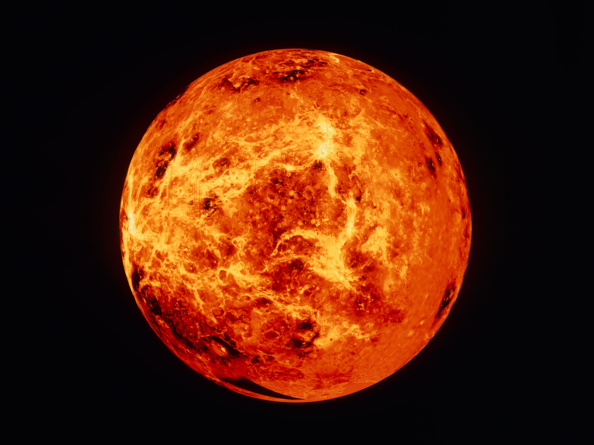

Venus

- Venus is the second planet from the Sun.
- Venus orbits the Sun every 224.7 Earth days.
- It is the brightest natural object in Earth's night sky after the Moon
- It is similar to Earth in size and mass, and is often described as Earth's "sister" or "twin".